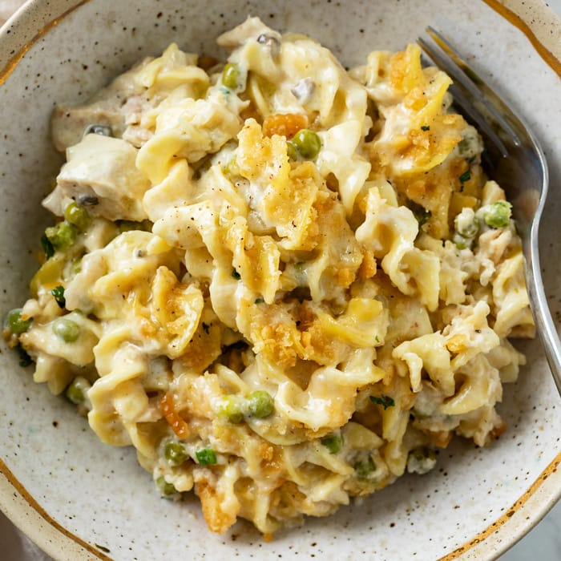

Tuna Noodle Casserole from Scratch
Based on
this recipe
from Allrecipes! Not my own!

Description
Tuna salad is somewhat of a guilty pleasure of mine, so this seemed nice!
Ingredients
- ½ cup butter, divided
- 1 (8 ounce) package uncooked medium egg noodles
- ½ medium onion, finely chopped
- 1 stalk celery, finely chopped
- 1 clove garlic, minced
- 8 ounces button mushrooms, sliced
- ¼ cup all-purpose flour
- 2 cups milk
- salt and pepper to taste
- 2 (5 ounce) cans tuna, drained and flaked
- 1 cup frozen peas, thawed
- 3 tablespoons bread crumbs
- 1 cup shredded Cheddar cheese
Steps
-
Preheat the oven to 375 degrees F (190 degrees C).
Butter a medium baking dish with 1 tablespoon butter.
-
Fill a large pot with lightly salted water and bring to a rapid boil.
Cook egg noodles at a boil until tender yet firm to the bite, 7 to 9 minutes.
Drain and set aside.
-
Melt 1 tablespoon butter in a skillet over medium-low heat.
Stir in onion, celery, and garlic; cook and stir until tender, about 5 minutes.
Increase heat to medium-high and mix in mushrooms.
Continue to cook and stir until most of the liquid has evaporated, about 5 more minutes.
Remove from heat and set aside.
-
Melt 4 tablespoons butter in a medium saucepan; whisk in flour until smooth.
Gradually whisk in milk and cook until sauce is smooth and slightly thickened, about 5 minutes.
Season with salt and pepper. Stir in tuna, peas, mushroom mixture, and cooked noodles.
Transfer to the prepared baking dish.
-
Place remaining 2 tablespoons butter in a microwave-safe bowl; cook in the microwave until melted, about 10 seconds.
Mix in bread crumbs until combined and sprinkle over casserole.
Top with Cheddar cheese.
-
Bake in the preheated oven until bubbly and lightly browned, about 25 minutes.